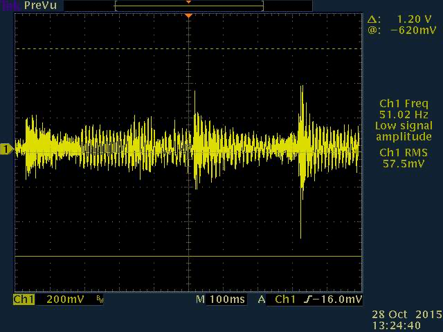
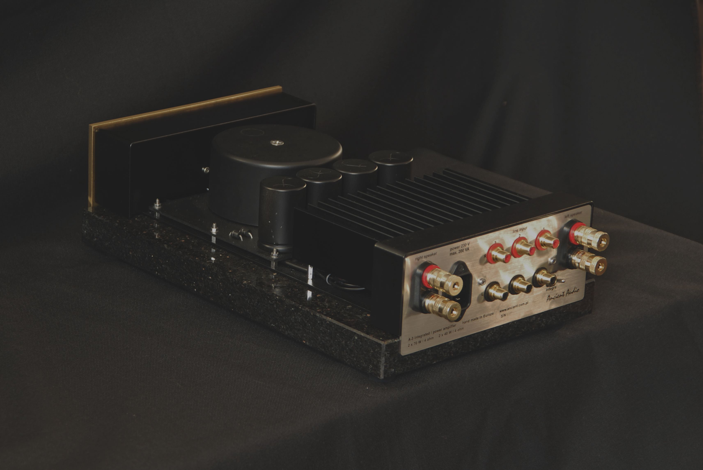

A-3
Since then the company has developed its scope of products which eventually culminated in the production of Grand Silver Mono amplifier considered by many to be the best single-ended vacuum tube amplifier ever produced.
To commemorate its round anniversary Ancient Audio wants to recall its first product as a paragon of well-shaped retro size, simplicity of circuit typology and above all – a signature sound. All these characteristics are shared by a new amplifier which makes use of the whole experimental and developmental background accumulated during the whole period.
The best amplifiers are of Class A Single Ended architecture. The reason for that is quite understandable – the same array of amplifying elements work for both positive and negative audio signals. It is of paramount importance to transfer steadily minute sound signals especially when their positive or negative parts do the zero – crossing. This is the weakest point of push-pull amplifiers. Although they are powerful and relatively of high efficiency their performance at lower volumes leave much to be desired.
Let’s take an example of a real sound signal – a jazz trio:
As one can see the majority of sound signal is of rather low character. It is there where the beauty of music lies with all its nuances and emotional impact. That is why Single Ended constructions seem the only option in cost no object solutions although they also have some limitations at highest levels of sound volume. This in turn is an area where push–pull boasts an undisputed advantage providing high voltage and amperage.
That is why A-3 seems the best combination of these two worlds: the single-ended world and the push-pull one. At low levels it works as a single-ended and at high levels as a push-pull configuration rendering timbre and details at its most faithful and natural way while at higher volumes provides power and punch so typical of push-pull constructions.
A-3 is a fulfilment of dreams about an ideal amplifier: powerful and trouble free as transistor, but sounding fine as the best Single Ended Triode tube gear.